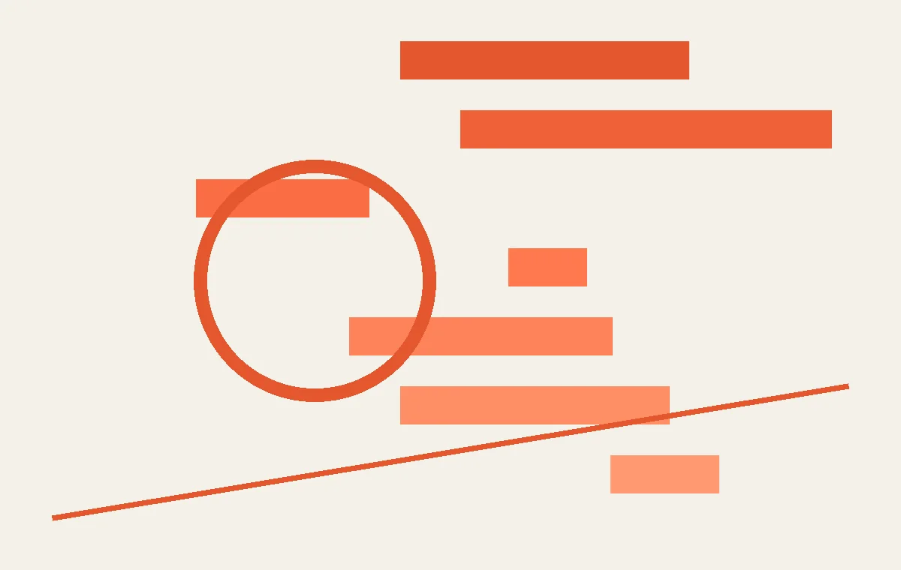
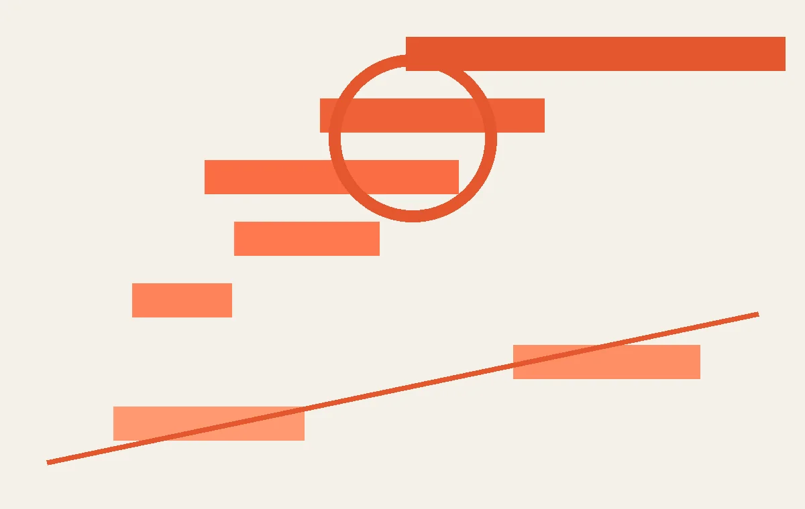
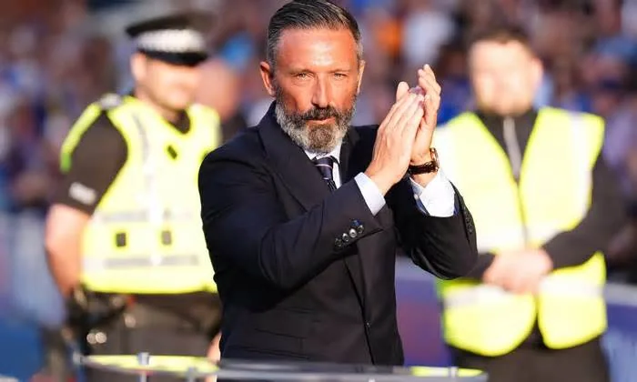
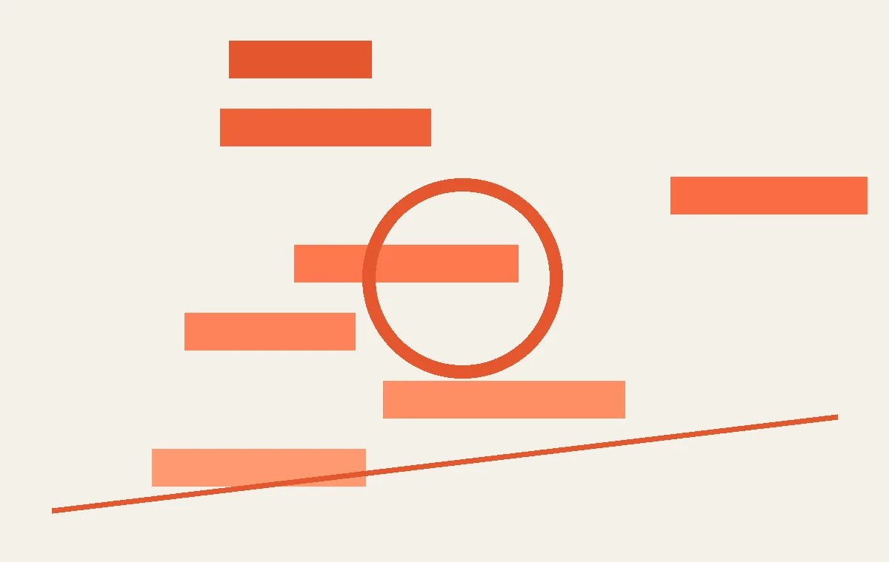

01
磁化水养护对CFRP加固用水泥基胶粘剂力学性能的影响
一项研究探讨了磁化水养护如何改善碳纤维加固用的水泥基胶粘剂性能。
你可能觉得，磁化水养护和运动有什么关系？但如果你经常去体育馆，或者自己经营健身房，那混凝土结构的耐久性就跟你有关了。最近《生物通》上刊登了一篇研究，讲的是用磁化水来养护水泥基胶粘剂——这种胶粘剂常用于近表面安装碳纤维增强聚合物（CFRP）来加固混凝土结构。简单说，就是把碳纤维布或棒材粘在混凝土表面，像给建筑贴“创可贴”一样，增强它的强度。很多体育场馆的看台、立柱、屋顶都会用到这种技术，尤其是那些老场馆翻新的时候。
研究团队做了对比实验：一组用普通自来水养护，另一组用经过磁场处理的水养护。结果发现，用磁化水养护的胶粘剂，在抗压强度和粘结强度上都有提升。具体数据没有公开，但论文里说提升幅度在统计学上是显著的。为什么磁化水有效？原理可能是磁场改变了水分子的团簇结构，让水更容易渗透到水泥颗粒中，促进水化反应，从而让胶粘剂更密实、更牢固。
这对普通人有什么影响？如果你管理一个运动场地，比如篮球馆、羽毛球馆，或者自己在家做健身房的混凝土修补，可以留意一下这种养护方法。它成本不高——只需要一个简单的磁化装置，把水管接上去就行。但要注意，这项研究还停留在实验室阶段，实际工程中效果如何，还需要更多验证。另外，磁化水的效果可能跟水质、磁场强度、养护时间都有关系，不能盲目照搬。
总的来说，科学养护能延长运动设施寿命，减少维修频率。下次你看到场馆翻新，不妨问问施工方用的是什么养护水——说不定他们已经在用磁化水了。
伊恩的观察
科学养护能延长运动设施寿命。如果你管理健身房或运动场地，可以关注这类新型养护技术。
02
山东男篮放弃大外援克里斯优先续约权
曾与杨鸣对喷的脾气火爆外援，如今被山东队放弃优先续约权，下赛季去向成谜。

CBA休赛期的消息一个接一个，今天最劲爆的莫过于山东男篮放弃了大外援克里斯的优先续约权。克里斯是谁？上赛季效力山东的内线球员，身高接近两米一，场均能贡献接近两双的数据——得分和篮板都上双，是球队内线的重要支柱。但他更出名的是火爆脾气。上赛季一场比赛中，克里斯和辽宁队主帅杨鸣在场边爆发激烈口角，两人激情对喷，裁判不得不介入平息事态。那场面，球迷们至今记忆犹新。
山东队这次放弃优先续约权，意味着克里斯可以和其他CBA球队自由接触，山东队不再拥有匹配报价的权利。为什么放弃？表面上看是球队阵容调整的需要，但深层原因可能更复杂。克里斯的技术没问题，但他的性格和情绪控制一直是隐患。在职业体育中，球员的团队化学反应有时比数据更重要。一个容易失控的球员，可能会在关键时刻影响全队士气，甚至引发冲突。山东队可能是在权衡之后，决定寻找更稳定、更融入体系的球员。
对于克里斯来说，他的下一站可能是另一支需要内线火力的球队。CBA里缺大外援的球队不少，比如北京、上海、新疆，都可能对他感兴趣。但前提是他能控制好自己的情绪。否则，即使去了新球队，也可能重蹈覆辙。
对普通篮球爱好者来说，这个故事提醒我们：打球不仅靠技术，还要靠情商。在野球场上，一个脾气暴躁的队友往往会让全队打得别扭。所以，下次打球时，记得控制情绪，多和队友沟通——这比多投进两个球更重要。
伊恩的观察
球员的性格和团队化学反应，有时比数据更重要。山东队的决定提醒我们，职业体育不仅看技术，也看融入度。
03
CBA三消息：朱芳雨新岗位出炉，刘炜不淡定，山西男篮不讲情面
朱芳雨担任新职务，刘炜情绪波动，山西男篮引援果断。

CBA休赛期，各队都在紧锣密鼓地调整阵容，今天有三条消息值得关注。第一条：广东队总经理朱芳雨被曝出任某篮球青训机构的顾问。朱芳雨是CBA传奇射手，退役后转型管理层，在广东队总经理位置上干得风生水起。这次担任青训顾问，意味着他将投入更多精力发掘和培养年轻球员。这对广东队来说是个好消息——他们的青训体系本就强大，朱芳雨的加入可能会让未来的人才储备更上一层楼。
第二条：上海队主帅刘炜在社交媒体上表现出不淡定。刘炜是上海篮球的旗帜人物，退役后执教上海队，但上赛季成绩不理想。最近他在微博上发了一些情绪化的文字，疑似对球队引援进展不满。上海队今年夏天动作不大，而其他强队都在补强，刘炜的焦虑可以理解。毕竟，作为主教练，他需要合适的球员来执行战术。
第三条：山西男篮不讲情面，放弃了几名上赛季表现不佳的球员，为签下新援腾出空间。山西队上赛季打进了季后赛，但首轮就被淘汰。管理层显然不满足于此，他们正在积极引援，目标可能是冲击四强。这种果断的操作，显示出山西队冲击更好成绩的决心。
这三条消息串起来看，CBA的竞争格局正在变化。广东队着眼未来，上海队急于求成，山西队则稳扎稳打。对普通球迷来说，休赛期是了解球队动向的好时机。你可以关注自己主队的引援和教练组变化，这往往能预示下赛季的走势。
伊恩的观察
休赛期是球队重建的关键窗口，管理层和教练组的每一个决定都可能影响下赛季的走向。
04
McInnes glad of Rangers backing in appeal against ban
流浪者主帅因批评裁判被禁赛四场，俱乐部支持上诉。

苏格兰足坛今天也有一则重磅消息：流浪者队主教练Derek McInnes因在执教哈茨期间批评裁判，被苏格兰足协处以四场边线禁赛。McInnes对处罚表示不满，并强调俱乐部支持他上诉。他在接受BBC采访时说：“我很感激流浪者站在我这边，我们相信上诉是合理的。”
事情是这样的：上赛季一场比赛后，McInnes公开指责裁判判罚不公，认为几个关键判罚影响了比赛结果。苏格兰足协认为他的言论有损裁判权威，违反了相关规定，因此开出罚单。禁赛意味着他将在新赛季初的几场比赛中无法在场边指挥，只能坐在看台上通过电话与助教沟通。这对于一支志在争冠的球队来说，无疑是个打击。
流浪者队目前正在推进两笔转会交易，McInnes希望上诉能尽快解决，以便专注于球队建设。俱乐部高层也表态支持，认为处罚过重。这起事件在苏格兰足坛引发了关于教练言论自由的讨论。一方面，教练有权表达对判罚的不满；另一方面，维护裁判权威也是保证比赛公平的基础。如何平衡，始终是个难题。
对普通足球爱好者来说，这个故事提醒我们：在业余比赛中，也要尊重裁判。即使判罚有争议，也应该通过正规渠道申诉，而不是当场发飙。毕竟，没有裁判，比赛就没法进行。
伊恩的观察
教练与裁判的冲突在足球中并不罕见，但如何平衡言论自由与尊重裁判，始终是一个难题。
05
Ben Kellaway's unbelievable catch on the boundary
The Hundred联赛中，Ben Kellaway在边界线附近完成一次不可思议的接杀。

板球The Hundred联赛今天上演了本轮最精彩的一幕。在南方勇士对阵威尔士火的比赛中，外野手Ben Kellaway完成了一次令人瞠目结舌的接杀。当时，威尔士火的Tristan Stubbs击出一记高飞球，球又高又远，眼看就要越过边界线。Kellaway从深外野位置全力冲刺，在边界线附近飞身一跃，单手将球接住。但更绝的是，他在空中意识到自己即将踩线，于是迅速将球抛回场内，然后稳稳接住。裁判确认接杀有效，Stubbs被迫离场。BBC评论员惊呼：“这球太接近了！简直难以置信！”
这次接杀之所以精彩，不仅因为难度高，更因为Kellaway在电光火石之间的判断和身体控制。他需要在高速奔跑中准确判断球的落点，同时还要注意边界线的位置。如果他在接球时脚踩到边界线，接杀就会无效，反而会被判为六分。但他做到了，而且动作一气呵成。
对普通板球爱好者来说，这种接杀需要极好的预判、速度和手眼协调。如果你想提升自己的外野能力，可以多练习移动步法和接球手法。比如，先练习在低速下接高飞球，然后逐渐增加速度和距离。另外，注意边界线的位置也很重要——很多业余球员因为踩线而浪费了精彩的接杀。
The Hundred联赛是英格兰板球的新赛事，规则简化，节奏更快，吸引了很多年轻观众。Kellaway的这次接杀，无疑会成为联赛的经典瞬间。
伊恩的观察
精彩的防守同样能点燃全场。想提升自己的接球能力，可以多练习预判和移动步法。
无障碍文字记录
伊恩 哈喽，欢迎收听今天的「伊恩每日·运动」。我是伊恩。今天咱们聊几个热乎的：CBA转会窗又有新动作，山东男篮放弃了大外援克里斯，朱芳雨有了新职务，山西男篮那边也闹出点动静；苏格兰足坛，流浪者主帅麦克因斯因为骂裁判被禁赛四场，但他反而感谢俱乐部支持；还有The Hundred板球联赛里一个让人拍大腿的神级接杀。另外，今天有一条看似不相关的新闻——磁化水养护对碳纤维加固水泥基胶粘剂的影响，这跟运动有什么关系？别急，待会儿我会告诉你，它其实跟运动员的康复训练和运动场馆维护有潜在联系。好，咱们一个一个来。
伊恩 今天CBA传来一个消息：山东男篮放弃了外援马里亚尔·克里斯的优先续约权。克里斯上赛季场均20分10篮板，数据确实漂亮，但山东队最终没留他。为什么呢？关键不在技术，在脾气。
克里斯有个“火爆”标签——上赛季和辽宁主帅杨鸣在场上激烈对喷，场面一度失控。情绪管理一直是他的软肋，更衣室里也容易炸。山东队这个决定，说白了就是：能力再强，破坏团队氛围就不划算。
这背后有个篮球圈的常见误区：很多人觉得“得分高就是好外援”，但团队运动里，化学反应比数据更重要。一个情绪不稳定的球员，可能让全队战术打折扣，甚至影响年轻球员成长。山东队放弃优先续约权，等于把选择权交给市场——其他队可以签他，但得承担风险。
对咱们普通爱好者来说，这提醒我们：打球时，技术固然重要，但和队友沟通、控制情绪同样关键。下次组队，不妨多留意“团队型”队友，赢球往往更稳。
后续看点：克里斯会去哪？CBA其他球队敢不敢接盘？山东队又会有怎样的引援动作？咱们接着看。
听众 伊恩，CBA放弃外援优先续约权，是不是意味着其他队可以随便签他？
伊恩 对，优先续约权是CBA的一种保护机制：如果球队想留人，可以开出一份不低于上赛季120%的合同，其他队就不能抢。但山东队放弃了这个权利，所以现在任何CBA球队都可以接触克里斯。不过考虑到他的火爆脾气，球队签他之前肯定会掂量掂量。
伊恩 今天来聊聊CBA休赛期的三则消息。首先，朱芳雨有了新岗位。根据搜狐的报道，这位广东宏远的总经理可能出任中国男篮的顾问或类似职务。朱芳雨球员时代是顶级射手，退役后管理广东队多年，拿了多个冠军，经验丰富。如果成真，他能为国家队带来实战经验和选人眼光。
第二条，山西男篮被曝在交易中“不讲情面”。具体来说，他们可能不愿意放走某些球员，比如原帅或张宁。山西队近年成绩不错，核心球员是球队基石，管理层强硬可以理解。但这也可能影响球员意愿，毕竟职业体育里忠诚和利益需要平衡。
第三条，刘炜不淡定。这位上海男篮的教练或管理层成员，可能因为球队引援不顺而焦虑。上海队上赛季投入大但成绩一般，休赛期需要补强，但优质球员稀缺，竞争激烈。刘炜的着急反映了CBA球队对人才的争夺。
这三条消息虽然细节不多，但揭示了CBA休赛期的暗流涌动：管理层变动、球员交易博弈、教练组压力。对普通球迷来说，这意味着下赛季的格局可能变化——广东队若失去朱芳雨的管理，引援策略会调整；山西队若留住核心，竞争力保持；上海队若能成功引援，有望冲击前四。
总结一下：CBA休赛期是球队重新洗牌的关键期，每个决定都可能影响未来几个赛季。作为球迷，我们可以关注后续官方公告，看看这些传闻是否成真。同时，这也提醒我们，职业体育的管理和交易远比场上比赛复杂，需要耐心和智慧。
伊恩 今天来聊聊苏格兰足坛的一则新闻。BBC报道，流浪者队主教练德里克·麦克因斯因为批评裁判被禁赛四场，但他公开感谢俱乐部的支持。事情是这样的：麦克因斯之前在执教哈茨队时，赛后公开指责裁判的判罚，言辞激烈。苏格兰足协随后对他处以四场禁赛。麦克因斯本人承认：“我犯了错，但俱乐部站在我这边，这很重要。”
这里有个关键点：教练批评裁判，为什么会被禁赛？其实规则很明确，教练在赛后评论裁判，尤其是带有攻击性或质疑公正性的言论，会被视为损害比赛声誉。苏格兰足协的纪律条例规定，这类行为最高可禁赛多场。麦克因斯这次被禁四场，算是中等处罚。
代价是什么？四场禁赛意味着他无法在场边指挥，只能通过助手或远程沟通。这对球队的临场调整影响很大。流浪者队目前正在争夺联赛前列位置，每一场都关键。麦克因斯不在场边，球员的战术执行和士气都可能打折扣。
但麦克因斯感谢俱乐部，说明内部没有分裂。流浪者队选择支持他，而不是内部处罚，这有助于稳定军心。不过，这也给其他教练提了个醒：赛后管住嘴，否则吃亏的是球队。
对普通球迷来说，这个案例告诉我们：在业余比赛中，教练或球员对裁判的激烈抱怨，也可能面临类似处罚，比如被罚下场或追加停赛。所以，尊重裁判是运动的一部分。
我的判断是：麦克因斯这次禁赛，短期会影响流浪者的临场指挥，但长期来看，如果他能吸取教训，反而可能让球队更团结。后续看点：流浪者在这四场中能否保持成绩，以及麦克因斯回归后是否会改变沟通方式。
听众 伊恩，教练骂裁判禁赛四场算重吗？
伊恩 算中等偏重。苏足协的纪律处罚有明确阶梯：口头警告、罚款、禁赛1-3场，严重的话可能5场以上。四场说明麦克因斯的言论比较激烈，但还没到最严重那档。另外，禁赛期间他不能进入更衣室和教练席，但可以跟球队保持远程沟通。
伊恩 最后咱们来个视觉冲击。BBC报道，The Hundred板球联赛中，南方勇士对阵威尔士火焰，本·凯拉韦在边界线上完成了一次不可思议的接杀，把特里斯坦·斯塔布斯的击球直接没收。慢镜头显示，凯拉韦在边线附近跳起，单手将球捞回，身体几乎完全悬空。这个防守不仅需要超强的反应，还需要对边界线位置的精确感知——因为一旦脚踩线，接杀就无效。
你可能想问，板球里的接杀规则到底有多严格？简单说，接球时球员身体的任何部分都不能触碰边界线或线外的地面，否则击球手就被判“四界球”或“六界球”，防守无效。凯拉韦这次是在高速冲刺中起跳，眼睛始终盯着球，同时用余光判断边界位置。他落地时双脚刚好在线内，身体重心却已经甩出线外——这种“悬空接杀”是板球防守中最难的技术之一，需要核心力量、空中平衡和精准的空间感。
对于咱们普通人来说，这个动作给了一个启发：运动中的“边界意识”其实无处不在。比如打篮球时踩线出界、网球中判断球是否压线，甚至跑步时不要踩到跑道内沿。凯拉韦的这次接杀提醒我们，在高速运动中，大脑必须同时处理多个信息——球的位置、身体的位置、规则的限制。你可以通过简单的“单脚平衡训练”来提升这种能力：闭眼单脚站立，同时用手接抛来的网球，每次坚持30秒，每天3组。这能强化你的本体感觉和反应速度。
至于后续看点，凯拉韦这个接杀很可能入选联赛最佳防守，而南方勇士也凭借这次关键防守提升了士气。对于普通运动爱好者来说，下次打球时不妨刻意练习一下“边界线附近的防守”，你会发现，原来身体的控制力可以这么强。
伊恩 今天聊一个看似跟体育无关，但实际影响深远的研究——磁化水养护对碳纤维加固材料的影响。你可能觉得这是土木工程的事，但听我讲完，你会发现它跟你的运动生活息息相关。
先看事实：生物通报道了一项研究，发现用磁化水养护水泥基胶粘剂，能显著提升其力学性能。这种胶粘剂用于近表面安装碳纤维增强聚合物（CFRP），简单说就是把碳纤维布或板粘到混凝土表面，用来加固结构。
那这跟运动有什么关系？举个例子，你常去的篮球馆、足球场看台，很多都是混凝土结构。时间久了会出现裂缝、老化，就需要加固。CFRP因为强度高、重量轻、耐腐蚀，成了首选材料。而磁化水养护能让胶粘剂更牢固，意味着场馆结构更安全、更耐久。想象一下，几千人坐在看台上欢呼，如果结构出问题，后果不堪设想。所以这项技术直接关系到你的安全。
再往深了说，碳纤维材料在运动康复里也用得越来越多。比如残奥会运动员的碳纤维假肢，还有专业护具，都依赖高强度的粘接工艺。磁化水养护如果能提升胶粘剂性能，这些器材的可靠性和寿命也会提高。
你可能想问：磁化水是什么？简单说就是经过磁场处理的水，它的分子团变小，渗透力和溶解力更强。用在混凝土养护里，能让水泥水化更充分，胶粘剂和碳纤维的粘结更紧密。研究数据表明，抗拉强度和粘结强度都有明显提升。
但注意，这还只是实验室结果。实际工程中，成本、施工工艺、长期耐久性都需要验证。不过方向是对的——用更环保、更高效的方式提升建筑和器材的性能。
对我们普通人来说，这意味着以后去体育馆会更放心，运动康复器材也会更可靠。下次你看到场馆翻新，或者买护具时，可以多问一句：用的什么粘接技术？说不定背后就有磁化水的功劳。
材料科学正在悄悄改变运动环境，从你脚下的地板到你头顶的顶棚。关注这些细节，你就能更聪明地运动、更安全地享受比赛。
听众 伊恩，磁化水养护是什么意思？跟我们平时喝的磁化水一样吗？
伊恩 不太一样。这里说的磁化水养护，是指用经过磁场处理的水来浇灌水泥基材料，让水泥水化更充分，从而提高强度。它跟市面上宣传的“磁化水保健”不是一回事。在工程领域，这是一种提高材料性能的实用技术。对运动场馆来说，更坚固的胶粘剂意味着看台和结构更安全，我们看球时也更放心。
伊恩 今天这几个故事，表面上看各不相同，但内核都指向一个词：边界。CBA球队在评估外援时，技术和性格之间有一条看不见的边界；教练和裁判之间，言论自由和尊重权威之间有一条规则边界；板球场上，接球手和边界线之间有一条物理边界；就连材料科学里，磁化水养护也在优化水泥基胶粘剂的性能边界。体育的魅力就在于，这些边界既限制了人，也成就了人。山东队放弃克里斯，是为了维护球队的边界；麦克因斯被禁赛，是越过了规则的边界；凯拉韦的神扑，则是在边界线上达到了极限。而材料科学的研究，则是在拓展我们运动环境的边界。
伊恩 好，今天的「伊恩每日·运动」就到这里。如果你对CBA转会、苏格兰足球、板球规则或者运动材料科学有更多问题，欢迎在评论区留言。我是伊恩，咱们明天见。